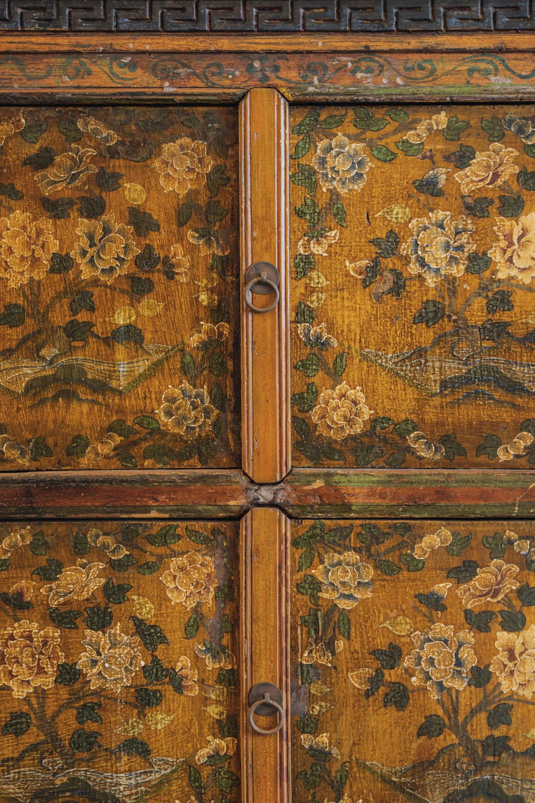
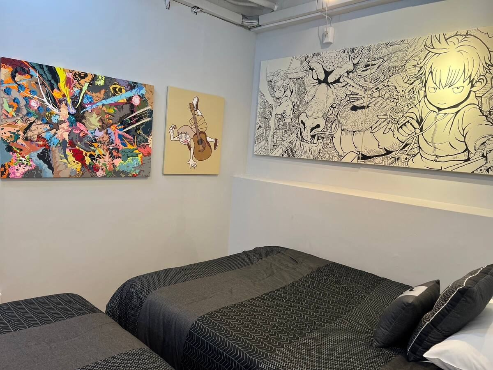

01 — CURATOR'S NOTE
미술관이 아니라,
삶 속에.
작품은 유리 너머가 아니라 손 닿는 거리에 있습니다. 아침 커피 옆에, 잠들기 전 시선이 닿는 곳에.
헤어 디자이너가 세계의 일터에서 만난 가구와, 큐레이터가 고른 현대미술. 두 시선이 섞이면서 이곳에만 있는 풍경이 생겨났습니다.
02 — SELECTED WORKS

앤티크 채색 문

유리 샹들리에

자개 세공 의자

현대미술 ・ ATELIER
아지석 벽
가가와 아지의 돌

돌과 가지의 설치 ・ 조용한 기도의 한 켠
03 — IN THE ROOMS
방마다,
다른 컬렉션이 있습니다.
칼럼: 세계가 가가와를 주목하고 있습니다 →
CENTRAL PARK와 ATELIER에는 국내외 현대 작가의 작품을 전시하고 있습니다. 묵는 방이 바뀌면 만나는 작품도 바뀝니다.
CENTRAL PARK
CENTRAL PARK 페이지로


ATELIER
ATELIER 페이지로


04 — TAKE IT HOME
마음에 남은 한 점을,
당신의 집으로.
관내 작품의 일부는 A4 Gallery에서 구입하실 수 있습니다. 작품 옆 QR코드로 작가와 작품의 이야기를 만나 보세요.
05 — ART AROUND SETOUCHI
예술의 섬들을 향한 거점으로.
나오시마
지추 미술관, 베네세 하우스 뮤지엄. 다카마쓰항에서 페리로 약 50분.
데시마
데시마 미술관. 다카마쓰항에서 고속선으로 약 35분.
이사무 노구치 정원 미술관
다카마쓰시 무레. 견학은 사전 예약제입니다.
다카마쓰시 미술관
시내 한가운데의 현대미술. CENTRAL PARK·ATELIER에서 걸어갈 수 있는 거리입니다.